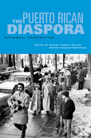

Histories of the Puerto Rican experience
Histories of the Puerto Rican experience


 Histories of the Puerto Rican experience
Histories of the Puerto Rican experience

|  |
The Puerto Rican DiasporaHistorical Perspectivesedited by Carmen Teresa Whalen and Víctor Vázquez-Hernándezpaper EAN: 978-1-59213-413-7 (ISBN: 1-59213-413-0) |
Outstanding Academic Title, Choice, 2006
"This is an innovative, if not singular, book on the formation and development of seldom studied Puerto Rican communities in the United States. The history of these communities yields a unique perspective on the racial dynamics, economic development, politics, and cultural life of the cities and towns that are included here. The contributors provide localized insights on the migration experience and help shape a detailed portrait of the Puerto Rican diaspora."
—Pedro Cabán, University of Illinois
Puerto Ricans have a long history of migrating to and building communities in various parts of the United States in search of a better life. From their arrival in Hawai'i in 1900 to the post-World War II era—during which communities flourished throughout the Midwest and New England—the Puerto Rican diaspora has been growing steadily. In fact, the 2000 census shows that almost as many Puerto Ricans live in the United States as in Puerto Rico itself.
The contributors to this volume provide an overview of the Puerto Rican experience in America, delving into particular aspects of colonization and citizenship, migration and community building. Each chapter bridges the historical past with contemporary issues. Throughout the text, personal narratives and photographs bring these histories to life, while grappling with underlying causes and critical issues such as racism and employment that shape Puerto Rican life in America.
Excerpt available at www.temple.edu/tempress
"This is an excellent, comprehensive collection of community histories across the Puerto Rican diaspora. To gather such a broad spectrum of Puerto Rican life from Boston to Hawai'i is a major accomplishment. The narratives bring into focus central aspects of the migratory and settlement process, and illuminate the resilience of a community often overlooked."
—Andrés Torres, University of Massachusetts Boston
"Each study can be read alone, but taken together as a chronicle of a people scattered widely across the Americas over time and space, this collection of original essays produces a very satisfying encounter with a demographic phenomenon both familiar and new. Whalen bookends the volume with excellent historical overview and conclusion. The writing throughout is clear and jargon free, and select photos enliven the narratives. Summing Up: Highly Recommended."
—Choice
"In her introduction, Carmen Teresa Whalen provided an excellent social and economic history on the process of Puerto Rican migration to the United States during the twentieth century...This is an excellent book that will potentially serve a diverse audience in the United States of those who study migration and social microhistories of such communities. It is a unique and extraordinary effort, offering a brief and accessible social and political history of distinct Puerto Rican settlements in the United States. The contributors provided a rich amount of bibliographic sources, particularly in English, which will benefit undergraduate classes on migration and Puerto Rican communities."
—The Journal of American History
"One of the values of this book is its focus on the history of the many other cities and communities the nearly four million Puerto Ricans in the United States live and work in."
—Centro Journal
“Carmen Teresa Whalen and Víctor Vázquez-Hernández’s valuable anthology recognizes [sic] the growing dispersal and complexity of Puerto Rican migration….The Puerto Rican Diaspora draws on an impressive array of primary sources, including government documents, oral histories, interviews, memoirs, newspaper articles, participant observation, and photographs…. [T]his well-grounded collection manages to reconstruct the diasporic experience from the migrants’ standpoint. Thus, it paints a sympathetic, intimate and vivid portrayal of Puerto Rican community life both past and present. The Puerto Rican Diaspora is a well-chosen and carefully edited collection on immigrant settlements beyond their traditional core in New York City.”
—Journal of Latin American Studies
"The [book] seeks to correct two misreadings of Puerto Rican American history: the assumptions that Puerto Ricans are recent migrants and that their migration has been to New York City, the post World War II 'Newyorican' phenomenon. The book does that successfully, in the sense that it identifies the early individuals who located in the cities under examination, and, more notably, in its tracking of the rise of the Puerto Rican communities of the various cities and states.... The book is a good introduction to the history of Puerto Ricans in the United States."
—Historical Journal of Massachusetts
Acknowledgments
1. Colonialism, Citizenship, and the Making of the Puerto Rican Diaspora: An Introduction – Carmen Teresa Whalen
2. Borinkis and Chop Suey: Puerto Rican Identity in Hawai'i, 1900 to 2000 – Iris López
3. Jesús Colón and the Making of a New York City Community, 1917 to 1974 – Linda C. Delgado
4. From Pan-Latino Enclaves to a Community: Puerto Ricans in Philadelphia, 1910-2000 – Víctor Vázquez-Hernández
5. From Aguada to Dover: Puerto Ricans Rebuild Their World in Morris County, New Jersey, 1948 to 2000 – Olga Jiménez de Wagenheim
6. Boricuas en Chicago: Gender and Class in the Migration and Settlement of Puerto Ricans – Maura I. Toro-Morn
7. La Colonia de Lorain, Ohio – Eugenio "Gene" Rivera
8. From "Rich Port" to Bridgeport: Puerto Ricans in Connecticut – Ruth Glasser
9. Saving the Parcela: A Short History of Boston's Puerto Rican Community – Félix V. Matos Rodríguez
10. Colonialism, Citizenship, and Community Building in the Puerto Rican Diaspora: A Conclusion – Carmen Teresa Whalen
Notes
Selected Bibliography on the Puerto Rican Diaspora
About the Contributors
Index
Carmen Teresa Whalen is Associate Professor of History at Williams College and author of From Puerto Rico to Philadelphia: Puerto Rican Workers and Postwar Economies (Temple, 2001).
Víctor Vázquez-Hernández is Assistant Professor of History at Miami Dade College.
Contributors: Linda C. Delgado, The College of Mt. St. Vincent; Ruth Glasser, University of Connecticut; Iris O. López, City College of New York; Félix V. Matos Rodríguez, Hunter College; Eugenio "Gene" Rivera; Maura Toro-Morn, Illinois State University; Olga Jiménez Wagenheim, Rutgers University, Newark; and the editors.
Latino/a Studies
American Studies
History
© 2015 Temple University. All Rights Reserved. This page: http://www.temple.edu/tempress/titles/1523_reg.html.